Temples & Religious Places
Vaishno Devi Temple
Jammu & Kashmir
One of the most sacred shrines dedicated to Goddess Vaishno Devi, nestled in the Trikuta Mountains. The trek itself is a spiritual and adventurous journey.

Golden Temple
Amritsar
A stunning gurudwara with golden architecture, serene waters of Amrit Sarovar, and soul-touching kirtans. Symbol of equality and brotherhood; central shrine for Sikhs worldwide.

Kashi Vishwanath Temple
Uttar Pradesh
Dedicated to Lord Shiva, located on the banks of the sacred Ganga. Pilgrims believe a visit here grants “moksha” (liberation).
Tirupati Balaji
Andhra Pradesh
World’s richest and most visited temple, dedicated to Lord Venkateswara (form of Vishnu). The temple receives lakhs of devotees daily; strong belief that wishes are fulfilled here.
Somnath Temple
Gujarat
First among the 12 Jyotirlinga shrines of Lord Shiva, standing tall on the Arabian Sea coast. Offers a blend of devotion, history, and beautiful sea views.

Jagannath Temple
Odisha
Famous for the annual Rath Yatra (Chariot Festival) when Lord Jagannath, Balabhadra, and Subhadra are taken out in massive chariots.


 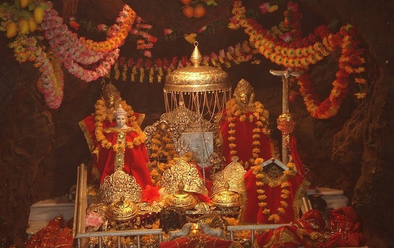
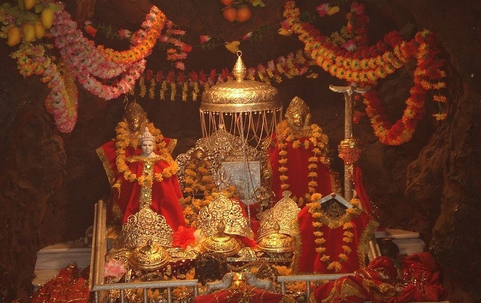


 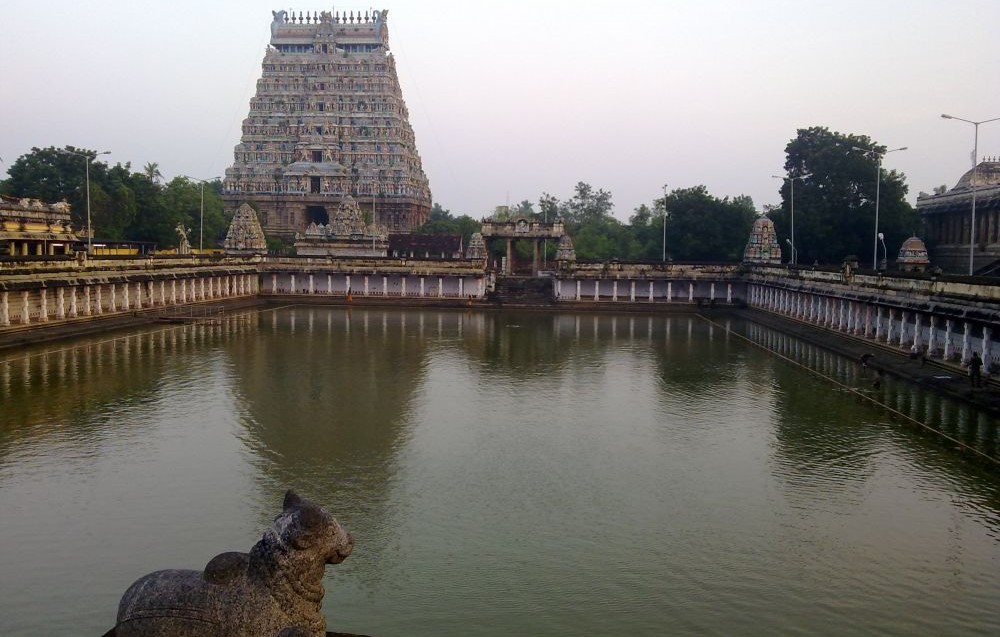
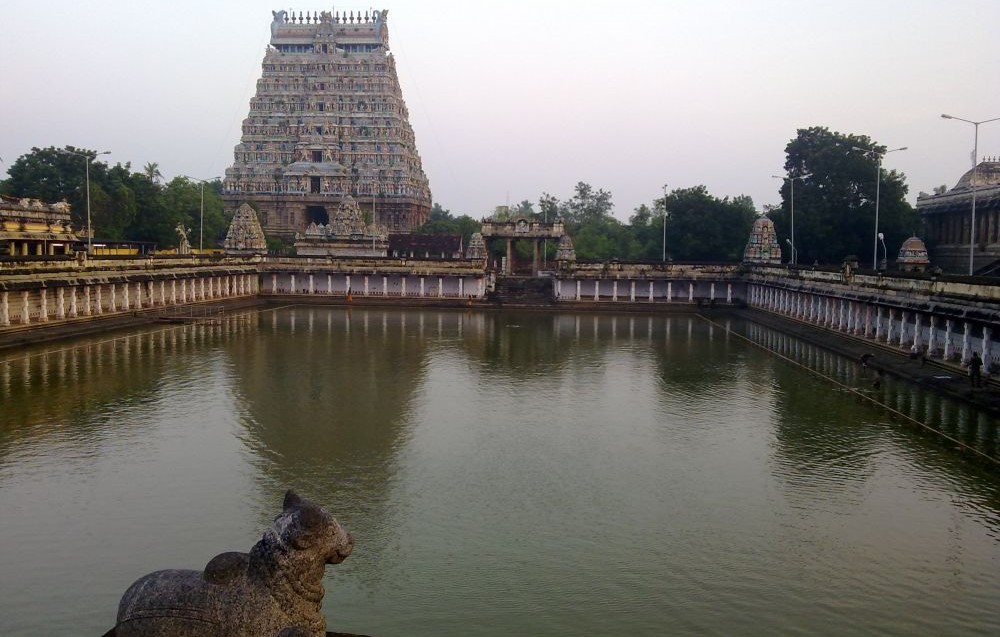

 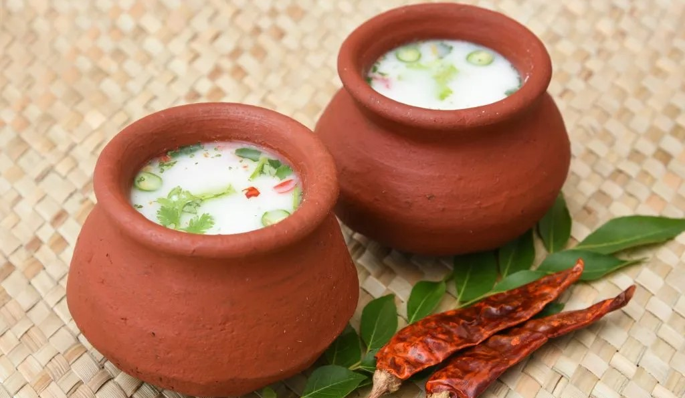
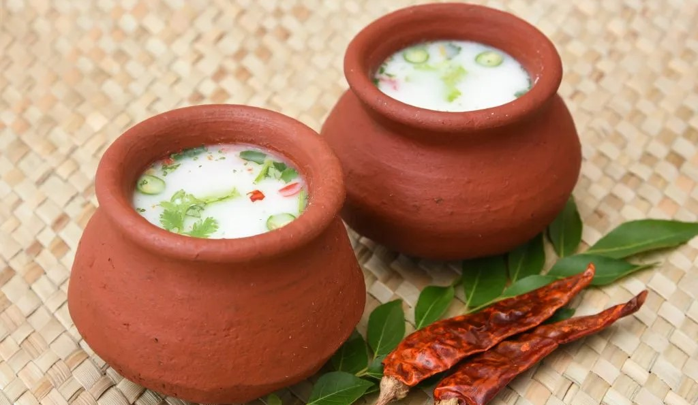


 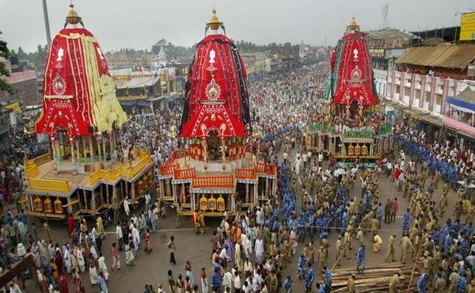
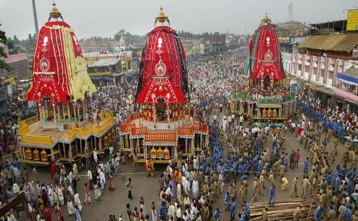


 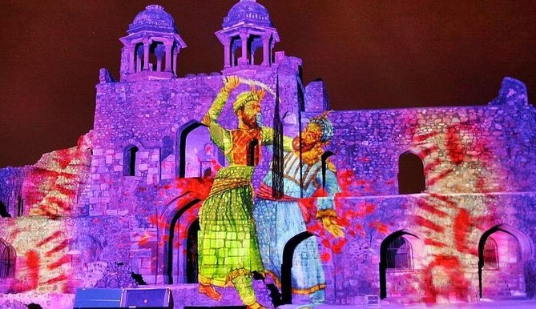
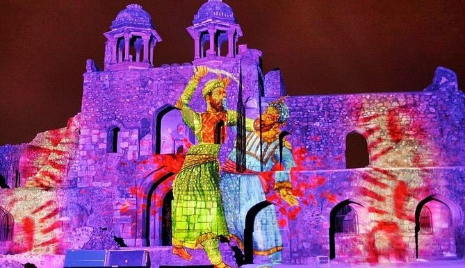
 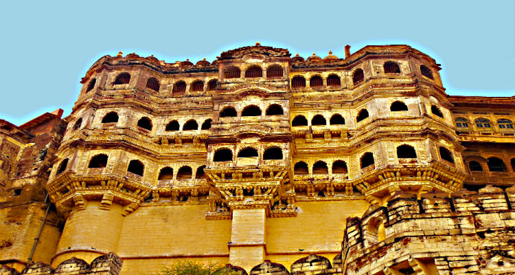
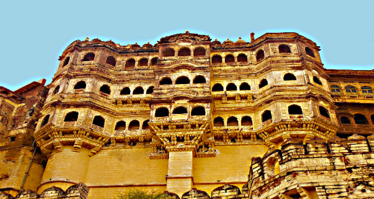
 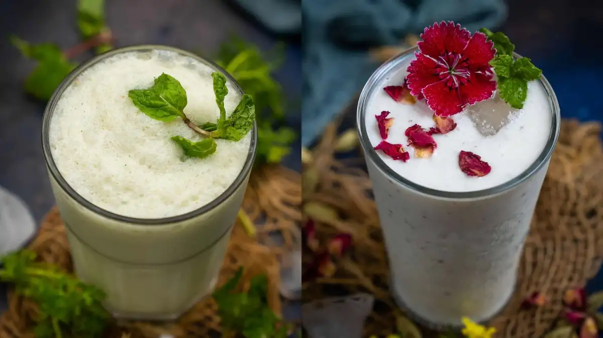
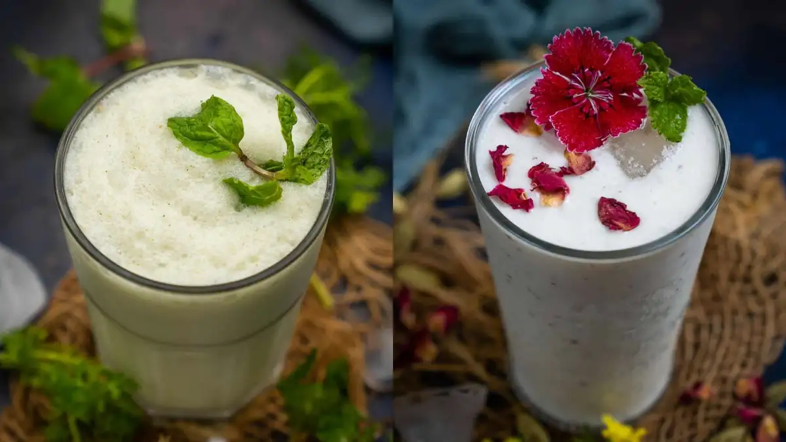
 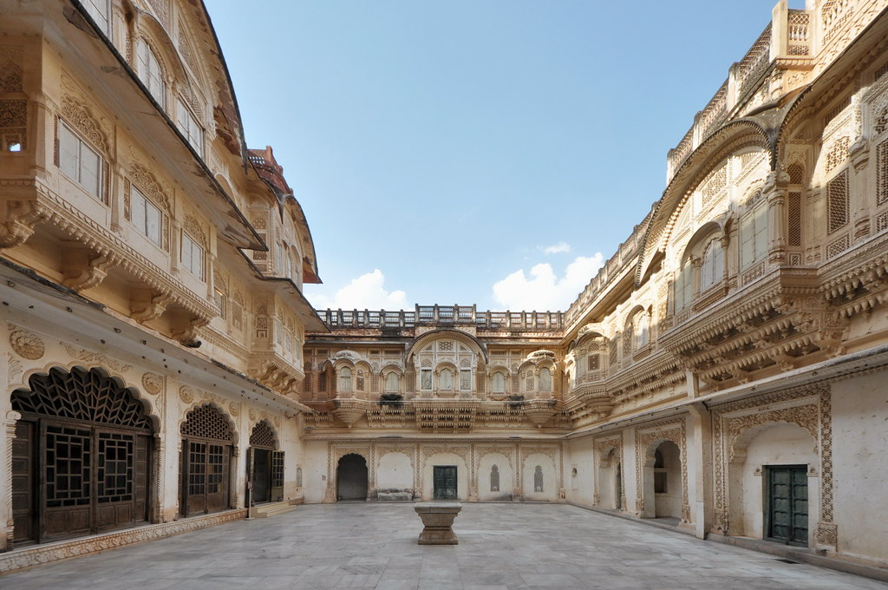
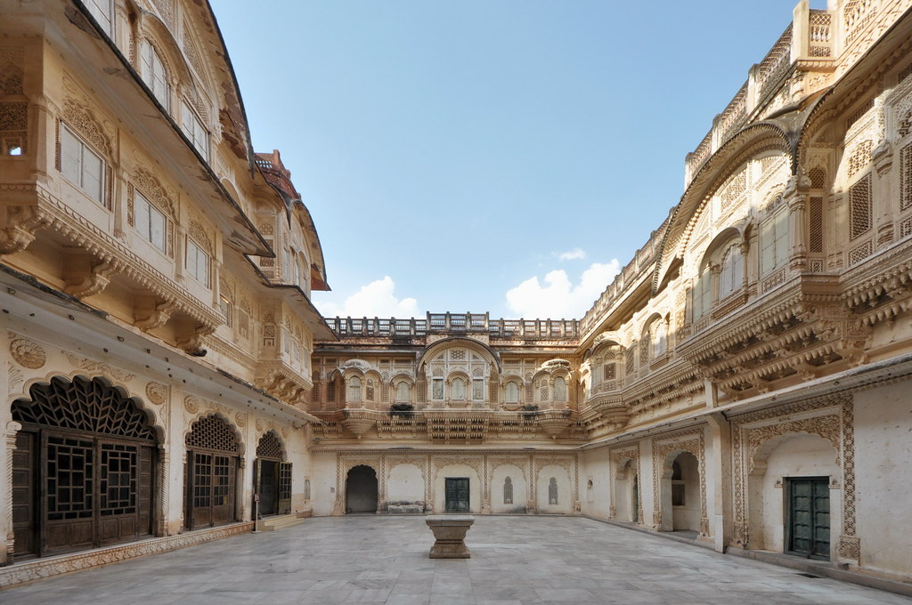
 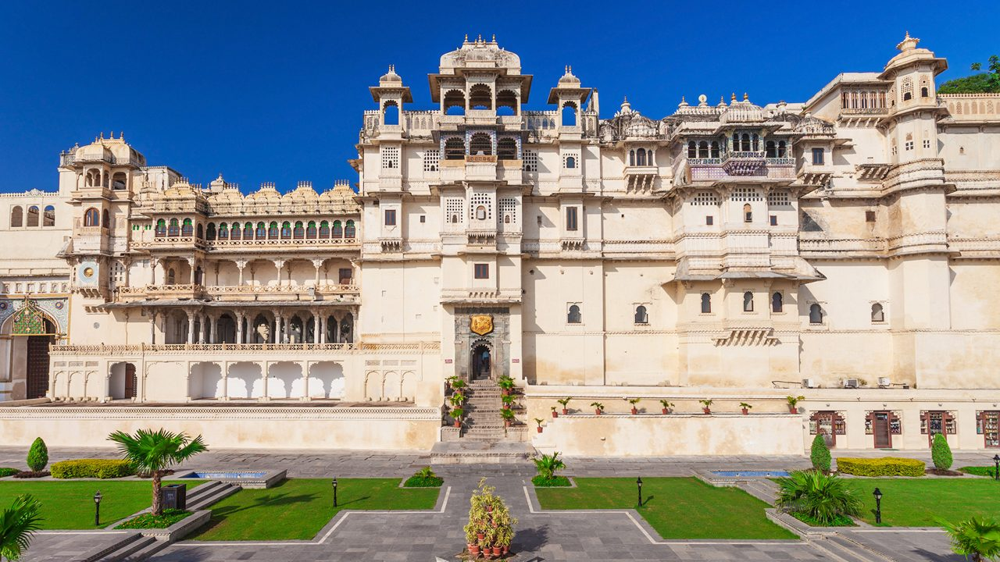
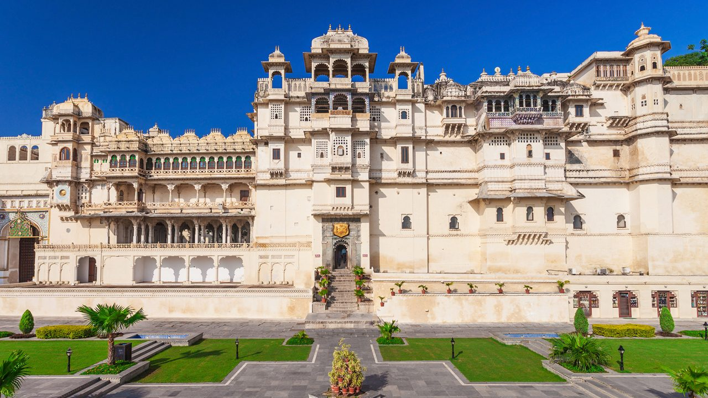

 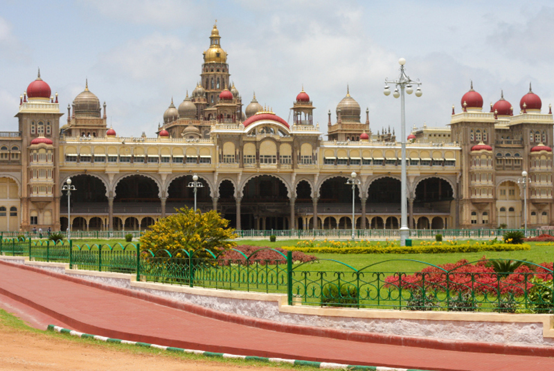
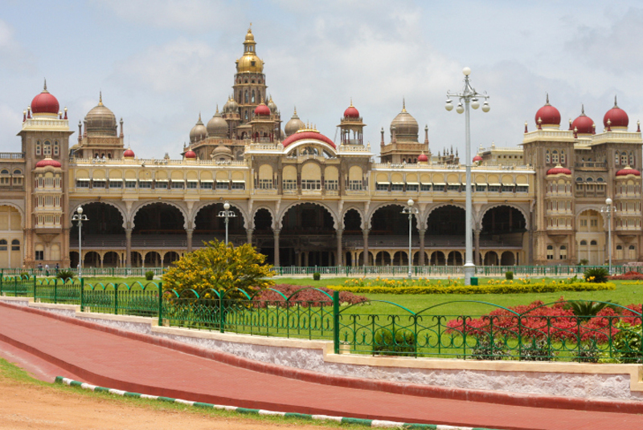